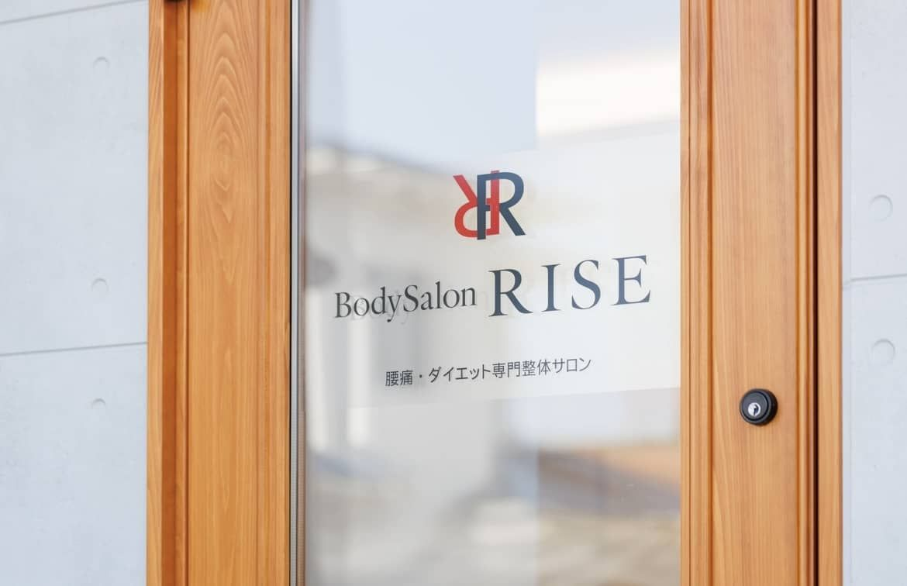
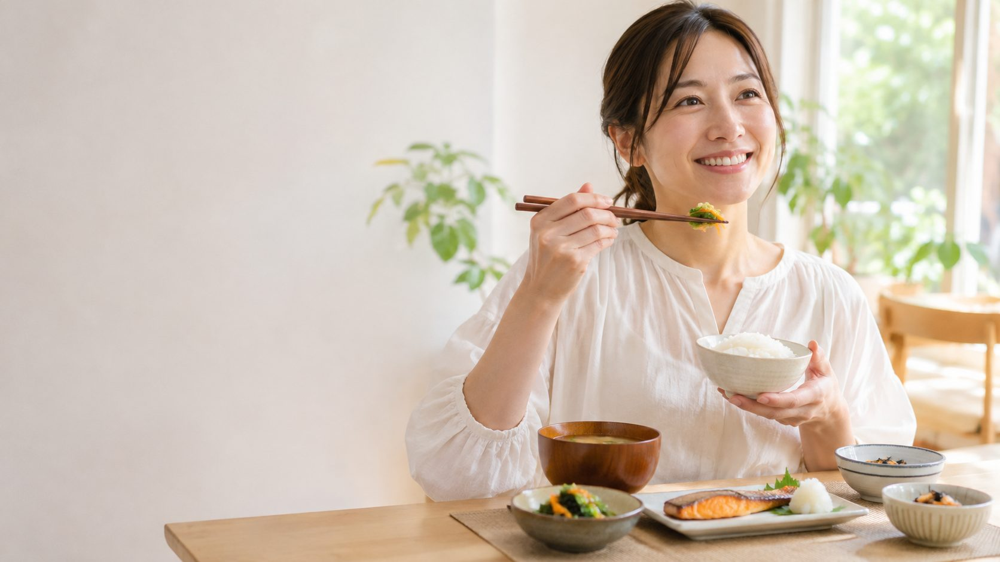
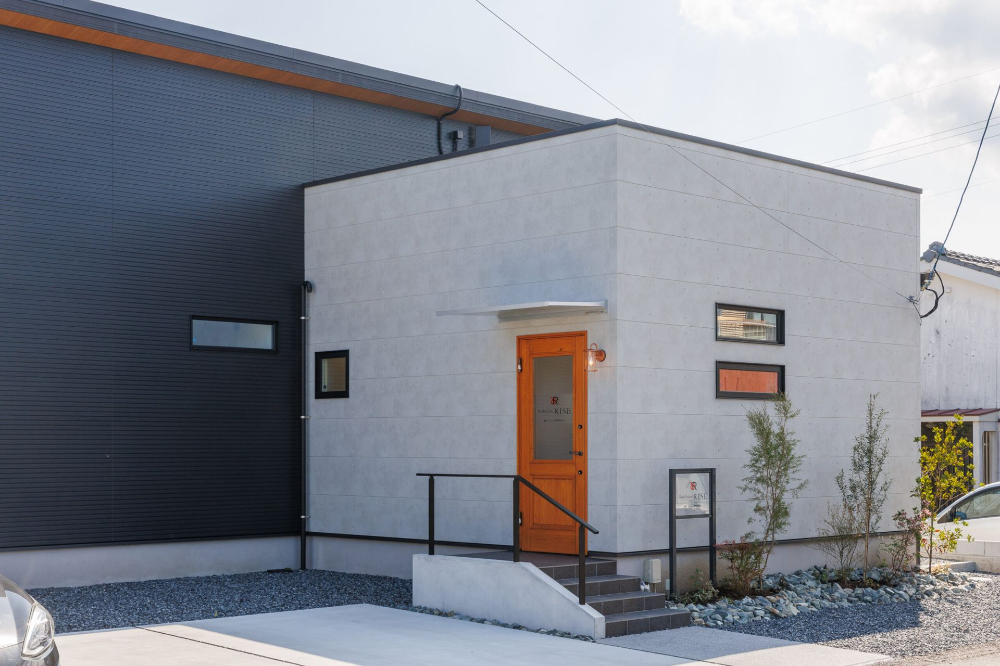
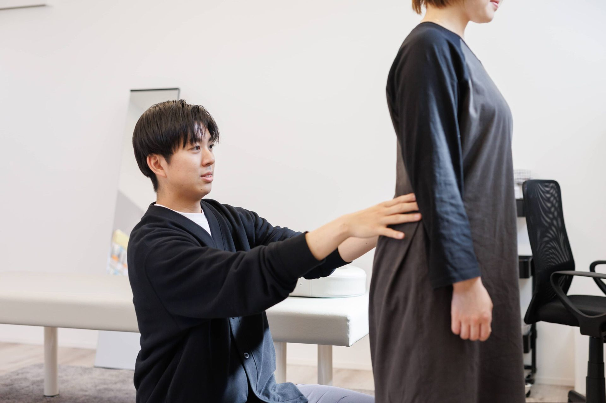
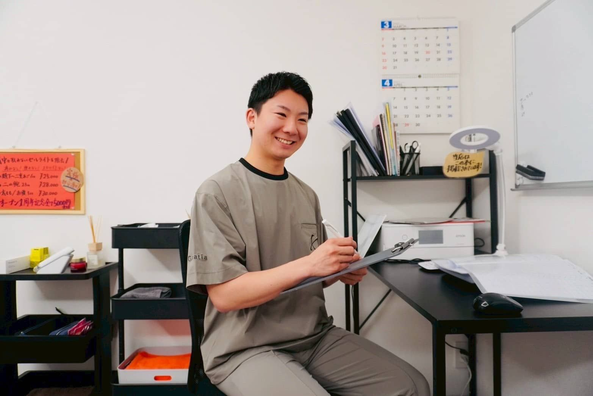
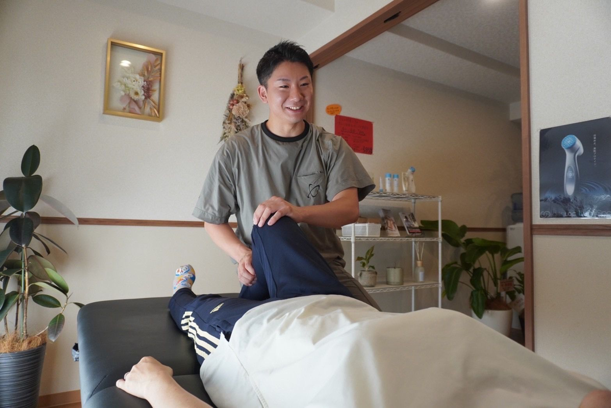
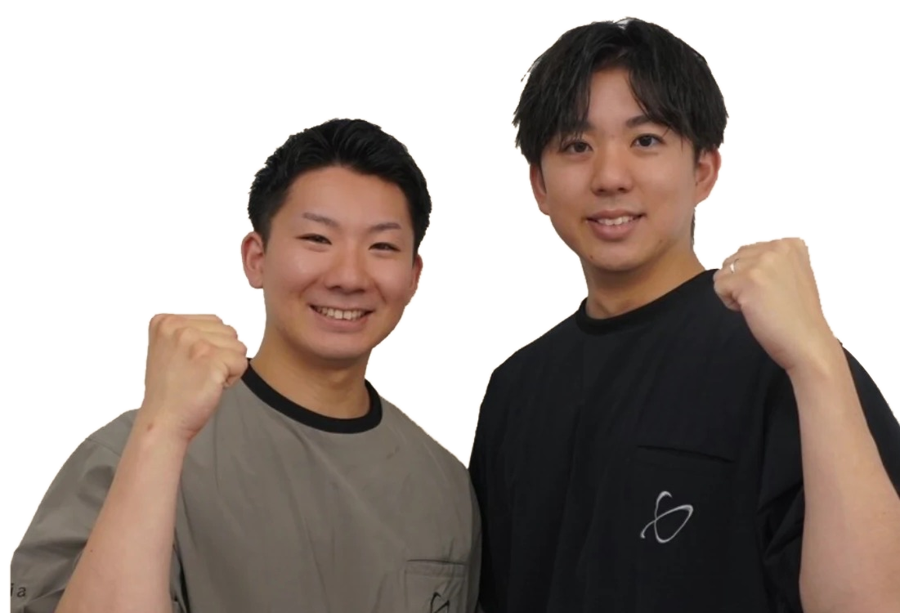

指宿・谷山のボディーサロン「Body Salon RISE」ダイエット・整体・育毛・肌質改善
4つの悩みを、ひとつのサロンで。
痩せたい。痛みをなんとかしたい。
髪や肌のことも、まとめて相談したい。
Body Salon RISE（ボディーサロンライズ）は、鹿児島県指宿市と鹿児島市谷山にある、完全予約制のボディーサロンです。
ダイエット・整体・育毛・肌質改善の4つのメニューを、ひとつのサロンでご相談いただけます。いくつもお店を回らなくても大丈夫。カウンセリングで、今のあなたにいちばん合う進め方からご提案します。
施術するのは、国家資格（柔道整復師・作業療法士）をもつ院長です。

RISEの4つのメニュー
気になるメニューを押すと、くわしい説明のページに移動します。組み合わせてのご相談も歓迎です。

体質改善ダイエット
遺伝子検査で体質を知り、整体と食事の見直しで、きつい運動や我慢の食事制限に頼らないダイエットを目指します。
- 遺伝子検査
- 栄養指導
- 3ヶ月コース

からだケア整体
腰痛・肩こり・膝の痛み、骨盤や姿勢のゆがみに。国家資格をもつ院長が、体の土台から整えます。
- 腰痛・肩こり
- 骨盤矯正
- ブライダル整体

頭皮ケア育毛
髪のボリュームや頭皮の状態など、相談しにくいお悩みに。カウンセリングで状態を確かめてからご提案します。
- 頭皮の状態チェック
- 頭皮ケア
- 生活習慣の相談

フェイシャル肌質改善
乾燥やくすみ、年齢とともに感じる肌の変化に。今の肌の状態をていねいに確かめ、ケアの進め方をご提案します。
- 肌の状態チェック
- フェイシャルケア
- 生活習慣の相談
こんなお悩み、ありませんか？
体のこと、髪や肌のことも。
ひとつのサロンで、まとめてご相談いただけます。
RISEが選ばれる3つの理由

4つの悩みを、
ひとつのサロンで
ダイエット・整体・育毛・肌質改善。いくつもお店を回らなくても、気になることをまとめてご相談いただけます。

国家資格をもつ
院長が担当
指宿院は柔道整復師、谷山院は作業療法士の院長が担当します。整骨院での経験を活かし、姿勢や骨格のゆがみから整えます。

一人ひとりに合わせた
オーダーメイド
マニュアル通りではなく、体質や生活に合わせて無理のない進め方をご提案します。無理な提案や押しつけはしません。
施術するのは、国家資格をもつ院長です
和田 諒真柔道整復師
「無理な提案や押しつけはせず、納得していただいてから施術します。」
- 柔道整復師（国家資格）
- ダイエットエキスパート

和田 一真作業療法士
「お悩みやご希望を、ていねいにうかがってから進めます。」
- 作業療法士（国家資格）
作業療法士

「本当の改善とは何だろう」から、RISEは始まりました。
整骨院に勤めていた頃、肩こりや腰痛の施術をしても、すぐに再発してしまう方を多く見てきました。「痩せていた頃はこんな痛みはなかった」――そんな声を何度も耳にし、その場しのぎではなく、生活習慣と体質から変えることが大切だと考えるようになりました。
目指すのは、地域の誰もが気軽に相談できる、身近なサロンです。体のことも、髪や肌のことも、まずはお気軽にご相談ください。
指宿院 院長 和田 諒真
はじめての方へ 初回限定キャンペーン
はじめての方に、まずは気軽に体験していただける料金をご用意しています。
ご予約・ご来店の際に「マイタウンを見た」とお伝えください
はじめての方（ご新規の方）は、下の初回料金で体験いただけます。
※初回料金は、はじめての方（ご新規の方）が対象です。料金はすべて税込です。2回目以降の料金・3ヶ月コースの料金は、カウンセリング時にご案内します。
※お支払いは現金・クレジットカードがご利用いただけます。
ご来店の流れ
- 1
LINEでご予約
通いやすい院の公式LINEから。「マイタウンを見た」と一言添えてください。
- 2
カウンセリング
お悩みや「こうなりたい」というご希望を、じっくりうかがいます。
- 3
状態のチェック
体・姿勢・頭皮・肌など、お悩みに合わせて今の状態を確かめます。
- 4
施術・ご提案
お体に合わせた施術と、これからの進め方をご提案します。
よくあるご質問
予約は必要ですか？
完全予約制です。予約時間ちょうど、または5分前にお越しください。はじめての方は10分前にお越しください。
予約・問い合わせの方法は？
施術中はお電話に出られないことが多いため、公式LINEかInstagramのDMからのご連絡が確実です。ご予約・ご来店の際に「マイタウンを見た」とお伝えください。
いくつかのメニューを組み合わせられますか？
はい、ご相談いただけます。カウンセリングで優先したいお悩みをうかがい、無理のない進め方と料金をご案内します。
育毛・肌質改善だけでも利用できますか？
まずは公式LINEからお気軽にご相談ください。お悩みやご希望をうかがい、合うメニューをご案内します。
支払い方法は何がありますか？
現金・クレジットカードがご利用いただけます。
子ども連れや男性でも利用できますか？
はい。子連れの方も男性の方も歓迎しています。完全予約制なので、周りを気にせずご相談いただけます。
駐車場はありますか？
指宿院は3台分ご用意しています。谷山院は専用の駐車場がないため、近くのコインパーキングをご利用ください。
店舗情報・アクセス
指宿市と鹿児島市谷山の2院。どちらも完全予約制です。子連れの方、男性の方もお気軽にどうぞ。
指宿院
指宿駅から車で約3分／駐車場3台
- 住所
- 〒891-0401
鹿児島県指宿市大牟礼3丁目25-23-1 - 営業時間
- 平日 10:00～19:00／土曜 10:00～18:00（完全予約制）
- 定休日
- 日曜・祝日
- 院長
- 和田 諒真（柔道整復師）
- SNS
- Instagram @wada.ibusuki
谷山院
駐車場なし（近くのコインパーキングをご利用ください）
- 住所
- 〒891-0114
鹿児島県鹿児島市小松原1丁目48-11 SEAGREEN 小松原102号 - 営業時間
- 平日 9:30～19:00／土曜 9:30～18:00（完全予約制）
- 定休日
- 日曜・祝日
- 院長
- 和田 一真（作業療法士）
- SNS
- Instagram @taniyama.diet
Instagramで、日々の様子を発信中
お客様の変化や施術の様子、体にいい食事のヒントなどを投稿しています。DMからもご予約・ご相談いただけます。
ご予約・ご相談は、LINEがかんたんです
通いやすい院の公式LINEから、お気軽にどうぞ。施術中はお電話に出られないことが多いため、LINEかInstagramのDMが確実です。
ご予約・ご来店の際に「マイタウンを見た」とお伝えください
LINEでご予約の方は、メッセージに「マイタウンを見た」と書いていただくだけでOKです。
指宿院
指宿市大牟礼 3-25-23-1
指宿院のLINEで予約 ご予約時に「マイタウンを見た」とお伝えください営業時間 平日 10:00～19:00／土曜 10:00～18:00（完全予約制）
定休日 日曜・祝日
谷山院
鹿児島市小松原 1-48-11 SEAGREEN 小松原 102 号
谷山院のLINEで予約 ご予約時に「マイタウンを見た」とお伝えください営業時間 平日 9:30～19:00／土曜 9:30～18:00（完全予約制）
定休日 日曜・祝日